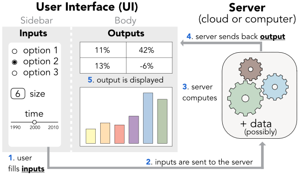

Teaching material for a course on dynamic dashboards.
Each session links to HTML slides and course material.
The datasets used in the course: songs, movies and olympics. Don’t forget to locate them in the app/notebook directory.

The data and code are meant for pedagogical use only.